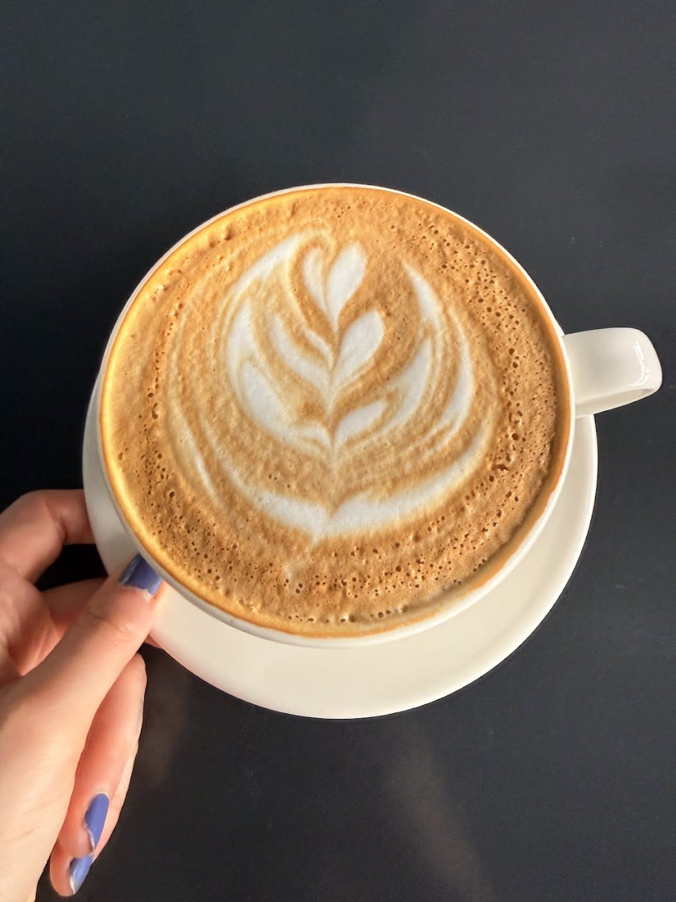
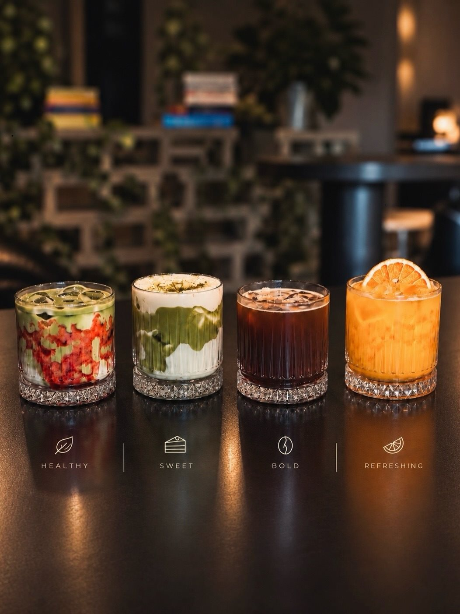
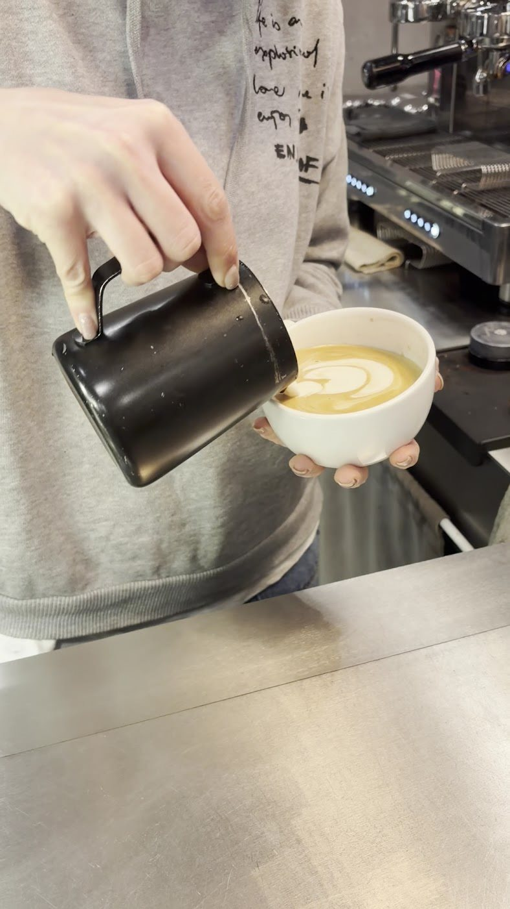

Banana Nut Cloud Matcha
Muz ve Hindistan ceviziyle hazırlanan Cloud Matcha.
Kavaklı / Demir Country
Kahvenizi seçin, günün temposuna küçük bir ara verin. Matcha sevenlere de masamızda yer var.
Google’da 4,8 / 5 354 yorum
Future’ın seçkisinden
Cloud Matcha koleksiyonundan yavaş demlemeye, sıcak çikolatadan salepe. O gün canınız ne istiyorsa.

Muz ve Hindistan cevizi, çilek ve vanilya, beyaz çikolata ve misket limonu. Aynı matcha, üç farklı yorum.
Güncel seçkiyi Instagram’da görünMuz ve Hindistan ceviziyle hazırlanan Cloud Matcha.
Çilek ve vanilyayla farklı bir matcha molası.
Beyaz çikolata ve misket limonuyla Cloud Matcha.
Yavaş demleme, fincanda açılan kahve aromaları.
Gerçek çikolatayla hazırlanan sıcak bir eşlikçi.
Serin günlerde sıcak bir fincan.
Güncel seçenekler ve fiyatlar için Instagram’dan yazabilirsiniz.

Kahveye ayrılan zaman
Demlemenin ritmi, kahvenin kokusu ve ilk yudum. Future’da kahve molasının sevdiğimiz tarafı bu.
İster klasik kahvenizle devam edin ister farklı bir içecek deneyin. Seçim için baristamıza danışabilirsiniz.
Future’a yol tarifiKavaklı’da, Demir Country’de buluşalım. Bir fincan kahveye eşlik edecek tatlıyı da vitrinden seçelim.
Google yorumları
Taze sandviçler, kruvasanlar ve tatlıların yanı sıra çok çeşitli sıcak ve soğuk içecekler de servis ediyorlar.
Kahvesi de çok güzeldi. Çalışanlar çok güler yüzlü ve yardımcı. Başka tatlar denemeye tekrar geleceğim.
Arkadaşlarım ile gittim. Keyifliydi ve gürültülü değildi.
Yorumlardan kısa alıntılar. Yazım ve noktalama düzenlenmiştir.
Google’da inceleyinKavaklı, Beylikdüzü
Ürünler ve güncel fiyatlar için Instagram’dan yazın. Bizi bulmak için harita bağlantısını kullanabilirsiniz.
Instagram’dan yazın